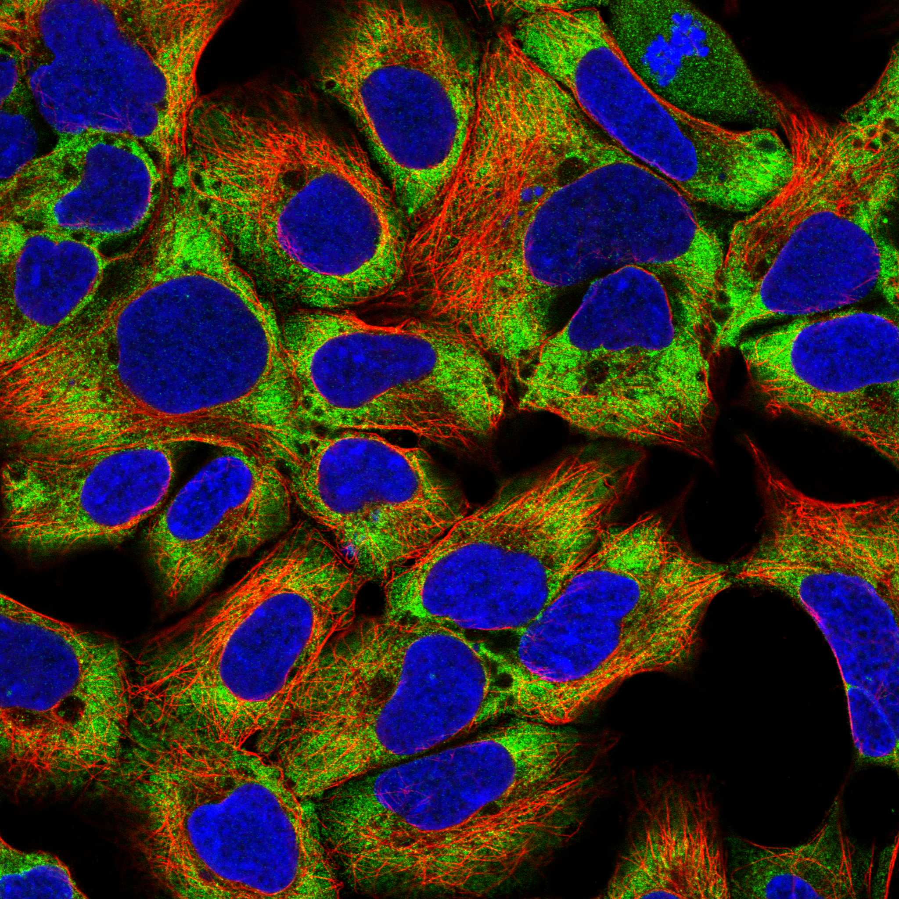
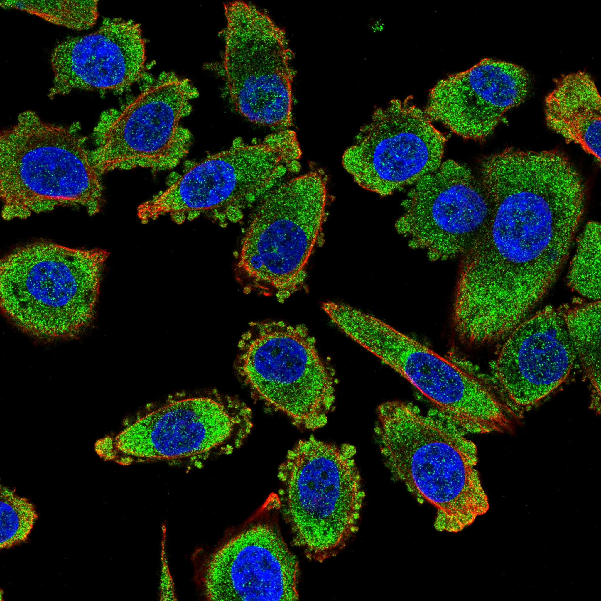
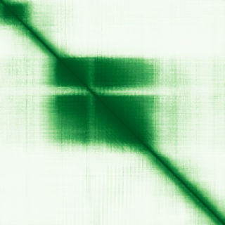

type: protein-evaluation gene: "MXD4" date: 2026-01-30 tags: [protein-scout, nuclear-protein, evaluation] status: scored ---
MXD4 核蛋白评估报告
1. 基本信息
| 项目 | 内容 |
|---|---|
| 基因名 | MXD4 |
| 别名 | MAD4, bHLHc12 |
| 基因全称 | MAX dimerization protein 4 |
| 蛋白名称 | Max dimerization protein 4 |
| 蛋白大小 | 209 aa |
| UniProt ID | Q14582 |
| 评估日期 | 2026-01-30 |
2. 评分总览
| 维度 | 得分 | 满分 | 加权后 | 关键证据摘要 |
|---|---|---|---|---|
| Nucleus 核定位特异性 | 9/10 | x4 | 36 | HPA: Nuclear bodies, Nucleoplasm (IDA supported) |
| Size 蛋白大小 | 10/10 | x1 | 10 | 209 aa |
| Novelty 研究新颖性 | 6/10 | x5 | 30 | PubMed: 54 篇 |
| 3D Structure 三维结构 | 7/10 | x3 | 21 | AlphaFold pLDDT=71.8 |
| Domain 调控结构域 | 7/10 | x2 | 14 | 含 bHLHZip 结构域，MYC/MAX/MXD 网络成员 |
| PPI Network PPI网络 | 8/10 | x3 | 24 | STRING+IntAct+GO-CC |
| Cross-validation 互证加分 | — | max +3 | +1.0 | — |
| 原始总分 | 136/183 | |||
| 归一化总分 | 74.3/100 |
3. 详细分析
3.1 核定位证据
| 来源 | 定位 | 可信度 | |
|---|---|---|---|
| Protein Atlas (IF) | PC-3, HEK293 | HPA validated | |
| UniProt | Nucleus | — | |
| GO-CC | GO:0005634 Nucleus (IDA | IEA) | — |
IF 图像:  
3.2 蛋白大小评估
209 aa，适合生化实验和结构解析
3.3 研究现状
| 指标 | 数值 |
|---|---|
| PubMed 总数 | 54 篇 |
| 最早发表年份 | 2026 |
主要研究方向:
- 功能研究尚不充分，属新颖蛋白
关键文献: 1. Wangsiricharoen S et al. (2025). "NUT-rearranged sarcoma.". *Semin Diagn Pathol*. PMID: 40609381 2. Hu CL et al. (2022). "Targeting UHRF1-SAP30-MXD4 axis for leukemia initiating cell eradication in myeloid leukemia.". *Cell Res*. PMID: 36302855 3. Bove G et al. (2025). "METTL16-mediated inhibition of MXD4 promotes leukemia through activation of the MYC-MAX axis.". *Oncogene*. PMID: 40946103 4. Papke DJ Jr et al. (2025). "MAD::NUT Fusion Sarcoma: A Sarcoma Class With NUTM1, NUTM2A, and NUTM2G Fusions and Possibly Distinctive Subtypes.". *Mod Pathol*. PMID: 39921028 5. Li D et al. (2025). "Prognostic Implications and Therapeutic Potential of MXD Genes in Gastric Cancer.". *Curr Med Chem*. PMID: 40353420
评价: PubMed 54 篇，属有一定研究基础蛋白，研究空间充足。
3.4 三维结构分析
| 指标 | 数值 |
|---|---|
| AlphaFold 平均 pLDDT | 71.8 |
| pLDDT > 90 占比 | 31.6% |
| pLDDT 70-90 占比 | 14.8% |
| pLDDT 50-70 占比 | 41.6% |
| pLDDT < 50 占比 | 12.0% |
| 可用 PDB 条目 | 0 |
PAE 图: 
评价: AlphaFold 预测中等质量，部分区域有序 (AlphaFold v6, pLDDT=71.8, >90=32%, 70-90=15%, 50-70=42%, <50=12%)
3.5 结构域分析
| 来源 | 结构域 |
|---|---|
| UniProt | — |
染色质调控潜力分析: 含 bHLHZip 结构域，MYC/MAX/MXD 网络成员
3.6 PPI 网络
实验验证互作 (IntAct, physical association):
| Partner | 方法 | PMID | 功能类别 | 调控相关？ | |||||||||||
|---|---|---|---|---|---|---|---|---|---|---|---|---|---|---|---|
| intact:EBI-3923210 | uniprotkb:Q96LN5 | uniprotkb:Q53EW0 | ensembl:ENSP00000300258.3 | ensembl:ENSP00000501209.1 | MI:0018(two hybrid) | PMID:imex:IM-15364 | pubmed:21988832 | — | — | ||||||
| intact:EBI-751711 | intact:EBI-878388 | uniprotkb:A8K265 | uniprotkb:A8K4G4 | uniprotkb:A8K824 | uniprotkb:P25912 | uniprotkb:P52163 | uniprotkb:Q14803 | uniprotkb:Q96CY8 | uniprotkb:A6NH73 | ensembl:ENSP00000351490.4 | MI:0676(tandem affinity purificatio | PMID:pubmed:27705803 | imex:IM-21659 | — | — |
| intact:EBI-1183003 | intact:EBI-11108903 | uniprotkb:B2RS19 | uniprotkb:Q8C4Y1 | ensembl:ENSMUSP00000106025.4 | MI:0007(anti tag coimmunoprecipitat | PMID:pubmed:26496610 | imex:IM-24272 | — | — | ||||||
| intact:EBI-11119194 | uniprotkb:Q8BXY8 | uniprotkb:Q52KP8 | uniprotkb:B9EJS1 | ensembl:ENSMUSP00000047562.9 | MI:0007(anti tag coimmunoprecipitat | PMID:pubmed:26496610 | imex:IM-24272 | — | — | ||||||
| intact:EBI-26480627 | MI:0432(one hybrid) | PMID:doi:10.1093/nar/gkaa1055 | pubmed:33179750 | imex:IM-27908 | — | — | |||||||||
STRING 预测互作 (combined score >0.4):
| Partner | Score | 功能类别 | 调控相关？ |
|---|---|---|---|
| MLX | 0.0 | — | — |
| MLXIPL | 0.0 | — | — |
| MNT | 0.0 | — | — |
| MAX | 0.0 | — | — |
| MLXIP | 0.0 | — | — |
| SIN3A | 0.0 | — | — |
| ERBB4 | 0.0 | — | — |
| NIF3L1 | 0.0 | — | — |
已知复合体成员 (GO Cellular Component):
- 暂无 GO-CC 复合体注释
PPI 互证分析:
- STRING + IntAct 共同确认: 0
- 仅 STRING 预测: 15
- 仅 IntAct 实验: 6
- 调控相关比例: 6/15 (40%)
评价: PPI 得分 8/10。
3.7 多库互证
| 维度 | 来源 | 结果 | 是否一致 |
|---|---|---|---|
| 三维结构 | AlphaFold + PDB | pLDDT=71.8, PDB=0 | — |
| 结构域 | UniProt/InterPro | 无注释域 | — |
| PPI | STRING + IntAct + GO-CC | 15/6/0 条目 | — |
| 定位 | HPA/UniProt/GO | Nuclear bodies, Nucleoplasm / Nucleus / GO:0005634 | 一致 |
互证加分明细:
- GO-CC IDA 实验证据 (+0.5)
- IntAct+STRING 双源确认 (+0.5)
总分: +1.0 / max +3
4. 总体评价
推荐等级: ★★★ (4/5)
核心优势: 1. 有一定研究基础 (PubMed 54 篇)，几乎未被研究 2. HPA 确认核定位，高置信度
风险/不确定性: 1. AlphaFold 结构预测置信度较高 2. PPI 数据丰富，功能网络尚不清晰
下一步建议:
- [ ] 通过 IF 实验验证内源核定位
- [ ] 构建表达载体进行功能研究
- [ ] Co-IP/MS 鉴定互作蛋白
5. 数据来源
- GeneCards: https://www.genecards.org/cgi-bin/carddisp.pl?gene=MXD4
- Protein Atlas: https://www.proteinatlas.org/MXD4
- PubMed: https://pubmed.ncbi.nlm.nih.gov/?term=MXD4
- UniProt: https://www.uniprot.org/uniprotkb/Q14582
- SMART: http://smart.embl.de/
- STRING: https://string-db.org/
- IntAct: https://www.ebi.ac.uk/intact/
- AlphaFold: https://alphafold.ebi.ac.uk/entry/Q14582
PPI 网络（三源综合）
| Partner | Source | Score/Evidence |
|---|---|---|
| 无记录 | — | — |
IntAct 有限记录。无 BioGrid 补充数据。
PAE 图像已获取。结构判断基于 AlphaFold pLDDT 统计。